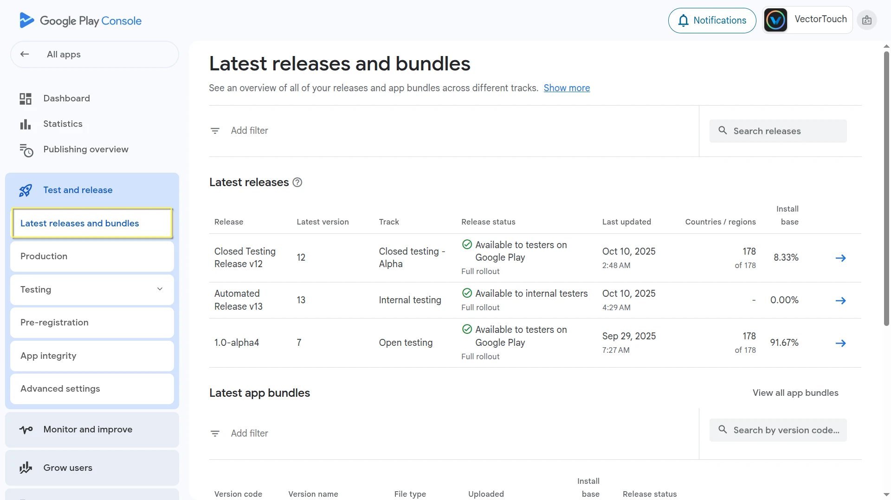
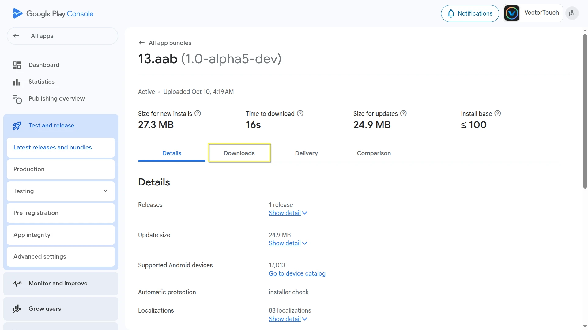
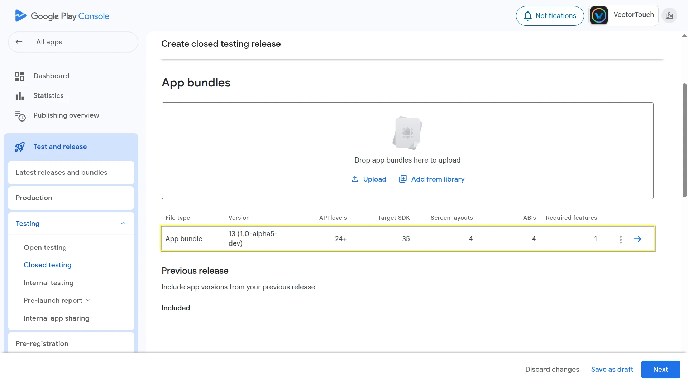

Resolving crashes on Android
When your game crashes on Android, you often see obfuscated stack traces in Play Console or other crash reporting tools like Firebase Crashlytics. To make these stack traces human-readable (symbolicated), you need native debug symbols that correspond to your game's exported build.
Godot now provides downloadable native debug symbols for each official export template.
Getting Native Debug symbols for official templates
Native debug symbol files are provided for every stable Godot release and can be downloaded from the GitHub release page.
For example, to get the native debug symbols for version 4.5.1.stable:
Go to the 4.5.1.stable release page
Download the release artifact
Godot_native_debug_symbols.4.5.1.stable.template_release.android.zip
Getting Native Debug symbols for custom builds
Your exported template and its native debug symbols must come from the same build, so you can use the official symbols only if you are using the official export templates. If you are building custom export templates, you need to generate matching symbol files yourself.
To do so, add debug_symbols=yes separate_debug_symbols=yes to your scons build command.
This will generate a file named android-template-release-native-symbols.zip containing the native debug symbols for your custom build.
For example,
scons platform=android target=template_release debug_symbols=yes separate_debug_symbols=yes generate_android_binaries=yes
If you are building for multiple architectures, you should include the separate_debug_symbols=yes only in the last build command,
similar to how generate_android_binaries=yes is used.
scons platform=android arch=arm32 target=template_release debug_symbols=yes
scons platform=android arch=arm64 target=template_release debug_symbols=yes
scons platform=android arch=x86_32 target=template_release debug_symbols=yes
scons platform=android arch=x86_64 target=template_release debug_symbols=yes separate_debug_symbols=yes generate_android_binaries=yes
Uploading Symbols to Google Play Console
Follow these steps to upload the native debug symbols:
Open Play Console.
Select any app.
In the left menu, navigate to
Test and release > Latest releases and bundles.

Now choose the relevant bundle and open it.

Select the
Downloadstab, and scroll down to theAssetssection.

Next to
Native debug symbols, click the upload arrow icon.

Select and upload the corresponding native debug symbols file for that build version.

Alternatively, you can upload the symbols when creating a new release:
On the Create release page, locate your new release bundle.

Click the three-dot menu beside it.
Choose
Upload native debug symbols (.zip)from the menu.

Select and upload the corresponding native debug symbols file for that build version.
Manually Symbolicating Crash Logs
You can also symbolicate the crash logs manually using the ndk-stack tool included in the Android NDK.
Note
If you already have the Android SDK installed, you can find the ndk-stack tool inside the ndk folder in your SDK location.
Otherwise, you can download the NDK directly from the NDK downloads page.
Extract the native debug symbols zip you downloaded earlier (or generated with your custom build).
Save your crash log to a text file (for example,
crash.txt).
Important
ndk-stack looks for an initial line of asterisks when parsing the crash log.
Make sure your crash.txt starts with the following line:
*** *** *** *** *** *** *** *** *** *** *** *** *** *** *** ***
Run ndk-stack with the path to the symbol directory that matches the crash's CPU architecture (for example,
arm64-v8a):
ndk-stack -sym path/to/native_debug_symbols/arm64-v8a/ -dump crash.txt
The output will display a symbolicated trace, showing file names and line numbers in Godot's source code (or your custom build).